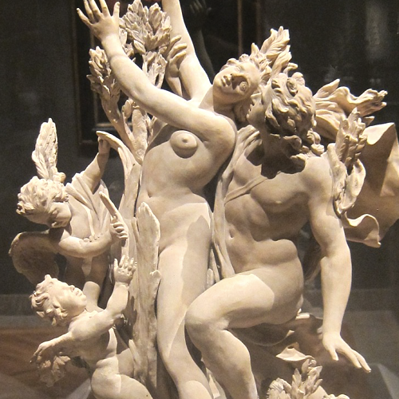
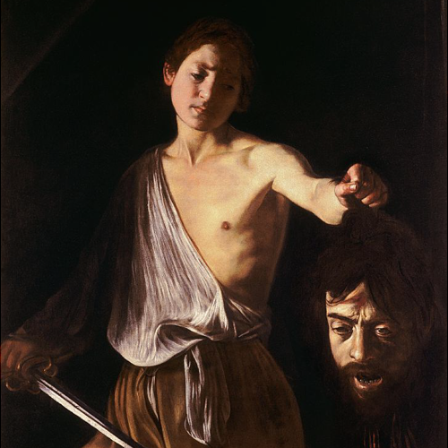

Стиль барокко появился в конце XVI — начале XVII веков в Риме, а затем распространился по многим странам Западной Европы. Эпоху барокко
иногда рассматривают в качестве начала триумфального шествия «западной цивилизации». От Ренессанса барокко унаследовало
свою основательность и пышность.
Архитектура
Сложная геометрия, неожиданные световые эффекты, разнообразие сложных узоров и пышного декора, где вогнутые пространства
неожиданно сменяются выпуклыми, пришли на смену более спокойной эпохи гармонии позднего ренессанса.
Инф.
Фрауэнкирхе
Дрезден, Германия

Инф.
Церковь Страдавшего от бича Спасителя
Штайнгаден, Германия
Контрасты масштабов, игра света и тени, интенсивные глубокие цвета создают ощущение иллюзорности и постоянной
изменчивости окружающего мира.
Из материалов применялись травертин, доломит, мрамор, базальт.
Первым новшеством, привнесенным скульптурой барокко, стал интерес к драматической сложности и многообразию мира.
Главное внимание уделялось динамизму ансамбля благодаря воплощению сцен, изображавших определенный момент
какого-то действия.
Джованни Лоренцо Бернини
Джованни Лоренцо Бернини

Инф.
Аполлон и Дафна
Галерея Боргезе, Рим, Италия
Являвшийся видным архитектором и ведущим скульптором своего времени, он считается создателем
стиля барокко в скульптуре.
Он создал новый канон придворной скульптуры, и, кроме того, увлекался живописью и графикой, был
известен своими шаржами, писал комедии и занимался режиссурой спектаклей.
Также как архитектор он сыграл весьма важную роль в формировании архитектурного облика Рима —
по его чертежам построены многие светские здания, церкви и фонтаны.
Одно из его главных творений — грандиозный ансамбль площади святого Петра.
Инф.
Пространство перед Собором Святого Петра
Ватикан
Закрыть
В скульптуре того периода появляется движение. Фигуры никогда не изображены в неподвижности, обычно фиксировался
кульминационный момент, наполненный динамизмом.
Иногда композиция «закручивалась» по спирали или кругу, что придавало дополнительный эффект вращения.
Инф.
Экстаз Блаженной Людовики Альбертони
церковь Сан-Франческо-а-Рипа, Рим, Италия
Живопись
Для итальянской живописи стиля барокко характерны неестественность и стилевая неопределённость, динамизмом, «плоскость»
и пышность форм.
Самые характерные черты барокко — броская цветистость и динамичность; яркие примеры — творчество Рубенса и Караваджо.
Микеланджело Меризи да Караваджо
Микеланджело Меризи да Караваджо

Инф.
Давид с головой Голиафа
галерея Боргеза, Рим, Италия
Его картины были наполнены драматизмом и были весьма оригинальны, фигуры он изображал таким образом,
что у зрителя возникало ощущение необыкновенной реалистичности.
Караваджо создавал картины вопреки религиозным стандартам, которые существовали в то время.
Он одним из первых применил манеру письма «кьяроскуро» — резкое противопоставление света и тени.
Что интересно, не было обнаружено ни одного его рисунка или эскиза, все свои сложные композиции он
создавал сразу на холсте.
Инф.
Шулера
Художественный музей Кимбелла, Техас, США
Закрыть
Инф.
Христос во время шторма на море Галилейском
в 1990 была украдена из Музея Изабеллы Стюарт Гарднер
Инф.
Похищение дочерей Левкиппа
Старая пинакотека, Мюнхен, Германия
Картины религиозной тематики были однозначными, эмоционально убедительными и мощными, они должны были вдохновлять
зрителей к большей набожности.
Также развивались картины в жанрах портрет и натюрморт.